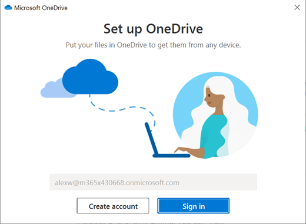

Samenwerken
Een document vanuit een documentbibliotheek openen
1. Ga naar een Sharepoint-site.
2. Open de documentbibliotheek (meestal met de naam
Documenten).
3. Een document selecteren
4. Voer een van de volgende handelingen uit:
■ Selecteer
Open >
Openen in browser.
■Als de desktop-app op uw computer is geïnstalleerd en u deze wilt gebruiken, selecteert u een bestand en selecteert u vervolgens
Openen >
Openen in app.
Een document delen
1. Selecteer de documenten die u wilt delen.
2. Selecteer
Share.
3. Dit kan op drie manieren:
■ Typ de namen of e-mailadressen van de personen met wie u het document wilt delen en voeg desgewenst een bericht toe. Als u klaar bent, selecteert u
Verzenden.
■ Selecteer
Koppeling kopiëren om een directe koppeling naar het bestand te maken, die u kunt delen via een e-mail- of charbericht.
■ Selecteer
Outlook om de webversie van Outlook te openen en een koppeling naar het bestand in een nieuw e-mailbericht toe te voegen.
Met anderen tegelijkertijd aan hetzelfde document werken
Open het document om het te bewerken in Office voor het web.
Open het document om het te bewerken in Office voor het web.
Het aantal mensen dat het document momenteel bewerkt, wordt weergegeven bovenaan het document in Office Online.

Bestanden met uw computer synchroniseren
1. Klik op
Klik op synchroniseren vanuit een documentbibliotheek op de SharePoint-site waarvan u bestanden wilt synchroniseren.
2. Meld u aan met uw werk- of schoolaccount.
3. Voltooi de installatie en de bestanden worden gesynchroniseerd met uw computer. U kunt uw bestanden vinden onder
OneDrive -
naam van organisatie in de Verkenner of de Finder van Mac.
Werken vanaf elke locatie
Met een Microsoft 365-abonnement waarin SharePoint Online is opgenomen, kunt u uw mobiele apparaat gebruiken voor toegang tot sites, samenwerken met college's, gedeelde documenten openen en verbonden blijven met uw werk.
■
Android-telefoons en -tablets
■
iPhone, iPad en iPod Touch